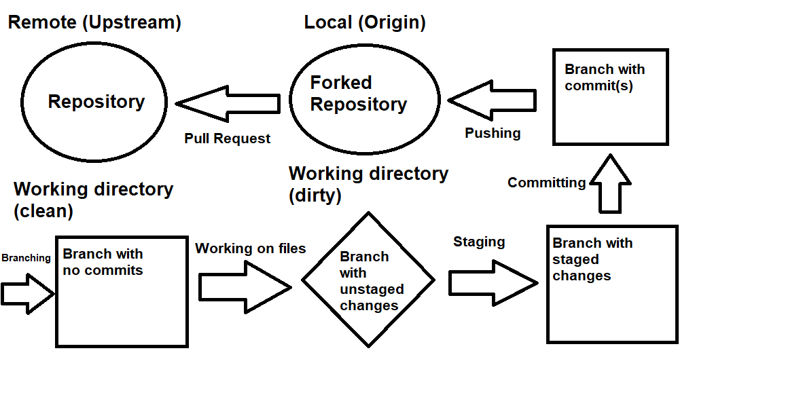
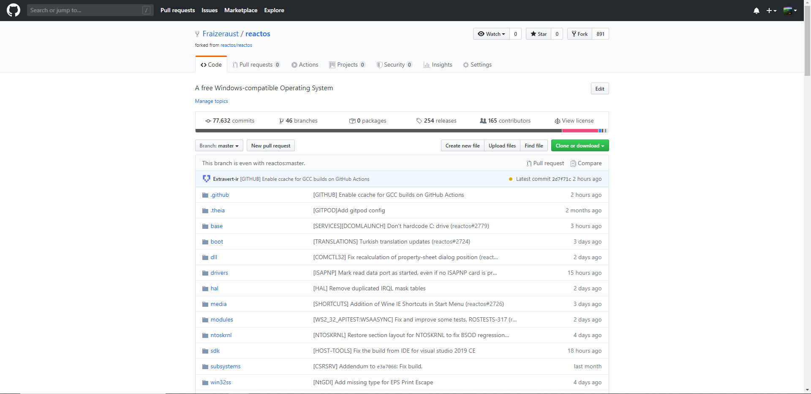
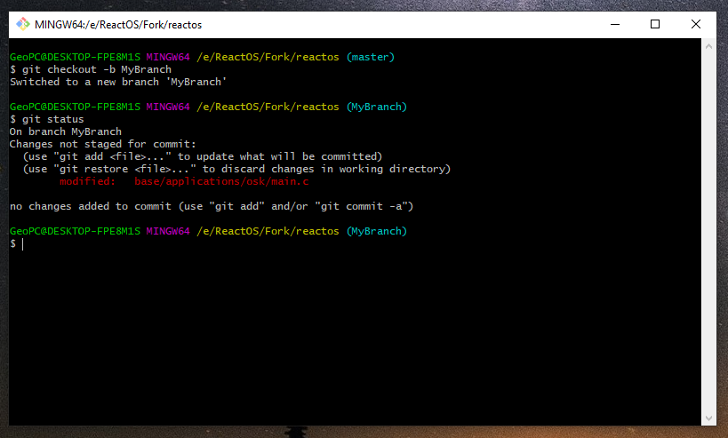
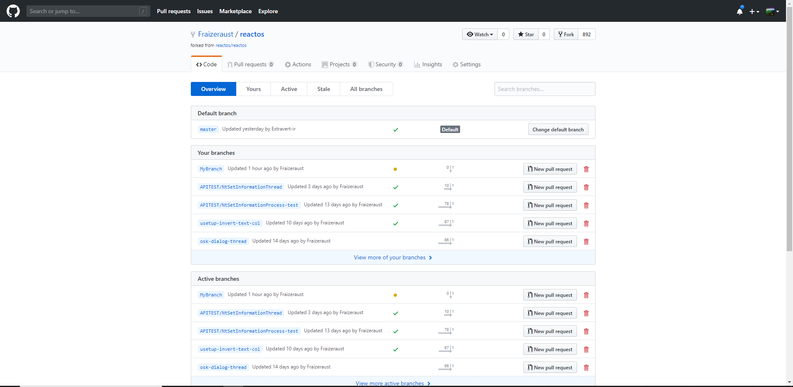
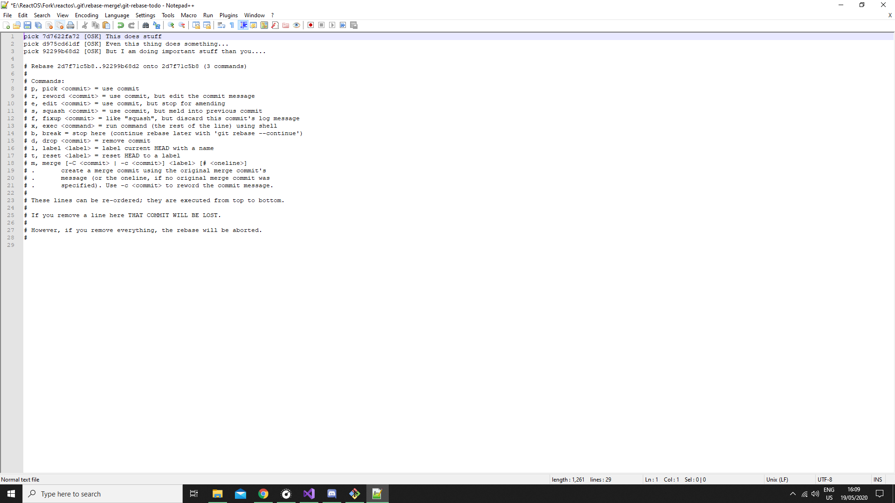

ReactOS Tutorials
Contribute to ReactOS with your first patch
Table of Contents
-
Git Workflow
-
Forking and cloning the ReactOS repository
-
Creating a Pull Request
-
Submitting a Pull Request
-
Other tricks
Git Workflow
🢂 Understanding the Git workflow
The Git workflow is the fundamental principle and the inner design of how Git operates with control verioning in a project development. In essence,
with Git it goes by committing changes, creating or pushing Pull Requests (with PR as abbreviation) and among other stuff like tagging
and setting up releases. Although to contribute to ReactOS we only care about how to create a PR for our patches. Now, consider this image.

Too intimidating for you? No worries, all these namings will be explained later. Think of Git workflow as a particular procedure that is highly structured that Git allows you to
see the state of things you are working on. With Git being a powerful control versioning software you can do multiple of things and working on stuff in parallel. When
you contribute to a project you must take into account the principle of working directory.
A working directory is the space area of a project you work in. In this case the area could be the remote repository that you own it or the forked repository from upstream.
You understand by that within the Bash terminal where the branch name is highlighted in light blue which means you're not only in that branch but also in the working directory
of your branch (and the repository in general).
The working directory area that doesn't have any unstaged commits or untracked files is deemed as clean, that is, it requires no needed action from the user.
However when the user does some changes to the repository's files, removing or adding new files the working directory is considered dirty to the point where
the user must do some action such as staging or tracking, committing the changes or just discarding them outright. If the user happens to sync its forked repository
by fetching and rebasing the latest references from the upstream repository the changes not listed for tracking or staging might be eventually lost.
In other words, when the working directory is dirty Git is aware of the presence of unstaged changes or untracked files but they're not part of the general
history of the repository. A clean working directory whereas the changes are committed and are properly visible in the logging history of a repository.
The recent committed changes can be seen with git log. Now, consider this image.

It's the same like above but instead of unstaged or staged changes you have tracked (or untracked) files. As the general principle of Git, manipulating the source tree
of a repository by deleting or adding files is grounds for altering the state of the working directory.
NOTE: Meanwhile the images mention Pull Requests to show your work for review to the remote upstream repository, a user with merge rights can
directly push their work without the need to prepare a PR. The general workflow in Git is still the same.
🢂 Definitions and names
Repository -- In Git, a repository is like a container where the project's files and directories reside. The repository is the primary source where collaborators
submit patches to the software in a controlled manner with history being tracked.
Remote -- Now that we know what a repository is, it's worth noting that a repository can be either a remote or local. A remote repository is
the primary repository hosted by an organization or a member where collaborators (and contributors alike) provide patch commits or pulling references from the
remote repository. In layman's terms a remote repository is like an important bookmark where people take or fill notes to it.
Local -- A repository that is being cloned from the remote is considered a local repository. The difference from the remote is that a local
repository belongs in your computer which you can set up branches and commit your stuff.
Upstream -- Upstream generally means a repository that's not forked by the user.
Origin -- A repository that is deemed as origin however means that it is forked by the user from the original repository, the upstream.
The action of copying the upstream repository to your GitHub account (which I'll explain later) is called forking.
Branch -- If a repository is the container then a branch is a sub-container, or just simply, a particular area where your work resides.
This allows you to work on multiple areas of the repository by setting different branches simultaneously without worrying that your work
may clutter or conflict with each other.
Master -- This particular branch is known as master, that is, the first ever branch to be created automatically when you set up a repository
in GitHub or with git init command line. When reviewers approve a certain PR from a contributor the work gets merged to master branch.
In other words, the master branch serves as the principal point of a repository with committed stuff that is ready to be deployed.
Commit -- Another important aspect of Git are the commits. A commit is a piece of data that contains information like the details of the changes
done to files, the author(s), a hash SHA1 ID that identifies the commit, the E-mail of the author, the commit date and optionally the GPG key verification
that a commit is being signed with.
Staged files -- Files whose changes that are noted to be ready for commit are known as staged files (or alternatively added in the "staging area").
In this point the working directory is considered dirty. Staged changes are marked as so with git add.
Unstaged files -- This is the opposite of staged files where changes done to the files are not ready to be committed.
Tracked files -- Removed or added files to the repository are deemed as tracked files. As usual they're marked as ready for commit with git add.
Untracked files -- Opposite of tracked files, untracked files are not ready for commit unless the user prompts them as so.
Working directory -- The working directory is the area where you work in the repository. The said area can be clean
if there aren't any unstaged, untracked stuff or anything similar or dirty when there are stuff that requires attention
from the user because it's not conformity with the general history of the repository.
Pull Request -- People can submit their work in form of pull requests. A PR is just a mere place where you show
your work to others in the remote repository where people can review or request changes.
Merge -- The action of pushing work of other contributors to master branch is called merging. Merging can be done
only if there's approval from enough collaborators of the project to deploy a certain PR.
NOTE: Understanding the difference between remote/local and upstream/origin is pretty important especially when one
deals with the remotes for example. Cloning a upstream repository is still a local one even if the user did not fork the repository
through GitHub.
NOTE 2: While there's no strict rule on committing stuff directly to master, it's recommended that you set up branches
for your own work. It might happen where you commit stuff to master, rebase the master branch and end up with unnecessary commits
on top your own commits.
Forking and cloning the ReactOS repository
🢂 Forking the ReactOS repository
In order to fork the repository you must have an account in GitHub, if you haven't done it so please register here.
When done click here to redirect to ReactOS repository page. You will see a "Fork" button at the top right. This lets you forking the repository.

Forking should take a couple of seconds to complete. Afterwards you'll be greeted with this page.

🢂 Cloning the repository
Cloning is the act of downloading the repository to your computer. It may take up several minutes or even a hour depending on the connection speed of your Internet. This is only
possible if you properly forked your repository. It is recommended that you create a separate folder named "Fork" where you'll be cloning your forked repository. The command line for this is...
git clone URL_HERE
With URL_HERE being the URL link of your fork. You can find such link in your fork page by clicking on "Clone or download".

Creating a Pull Request
🢂 Creating a branch
Setting up a branch can be done in two ways.
git checkout -b BRANCH_NAME
git branch BRANCH_NAME
Very self-explanatory. Git will prepare a branch on top of the other branch you were previously in. Let's create a branch with name "MyBranch" for example.

🢂 Staging your work
Now you can proceed on doing your work. For instance, let's edit the main.c file of On-Screen Keyboard. When you perform changes to files the working
directory becomes dirty. You can understand that by typing git status in the terminal prompt.

As you can see Git is aware of specific changes you have done but they're not up in the staging area. Git cannot stack the changes up for commit unless you stage them.
git status is a very useful command to monitor the activity and overall status of your branch. In order to stage the changes you've to type the following
command.
git add PATH_TO_FILE
With PATH_TO_FILE being file path which you made the changes to. For multiple files you can type git add * with the asterisk indicating
that Git should stage all the edited files. git add works exactly the same with untracked files. Besides git restore as pointed by the
message in the Bash terminal you can discard specific changes with git checkout PATH_TO_FILE as well.
🢂 Committing
As you mark specific changes as staged they can be now prepared for committing. Normally you'd see something like this.

Changes that you don't want to be committed can be discarded. By design, Git doesn't take into consideration unstaged or untracked data as Git looks into the staging/tracking
area of your working directory space. You can begin to commit by typing...
git commit
Executing this command will invoke the default text editor that Git uses. git commit accepts option flags and further parameters, the -m flag
which takes a commit title parameter (that must be wrapped in double quotes). This is the faster way to commit if you wish only to provide a commit title although
for a better descriptive commit with a proper description template we'll only be using git commit.

As per the message pointed in the screen of the editor, an empty commit message is prone to aborting your committing. This can be done by exiting the text editor if you wish to
abort preparing the commit. The commit title (+ the commit description) can be written either at the top or beneath the message wrapped in hash symbol. In ReactOS the
commit title should respect the following rule...
[COMPONENT_NAME] This does bla bla...
Very simple, huh? Basically COMPONENT_NAME is the name of the module in ReactOS you were committing on. In this example as I am providing a commit
for On-Screen Keyboard then the name should be OSK, in upper case letters. This can be understood by getting used to the ReactOS source tree.
In case you are translating certain applications or stuff of ReactOS, labels like [TRANSLATION] can be used. When you're done writing necessary
information about you commit make sure that you close the editor in order for changes to take effect.
🢂 Pushing
We're almost here, you have created your first commit! When making commits the staged changes or tracked files no long belong to the staging/tracking area and as such
Git is now fully aware of your work and it's explicitly part in the commit history of the repository. However your work is still local and not yet available to the
public (unless you set up a patch with git format-patch but this is a completely different matter). Pushing your branch comes into play. Generally
the command line to do so is this...
git push
Submitting a Pull Request
The GitHub page should show up like this when you log in.

To get through pull request submission click on "Compare & pull request" as shown in the light yellow background. You'll be greeted with this page.

It is recommended to read the contribution rules and pull request template guideline to get a better overview when contributing to ReactOS. In the edit box
you can fill out information about your PR, its purpose and what changes does it bring. The pull request can be marked as "Draft" by cliking on the arrow
button near "Create pull request". Draft pull requests mean that your work is still in progress. Congratulations, you have made your first PR for the ReactOS
project for the first time!
🢂 Deleting a branch
Branches can clutter up the branch list when dealing with many PRs. It is a good practice to remove old branches that you don't work on them anymore
or your work has been merged. In the fork page click on "X branches" to access your branch list as well as the upstream remote branches.

Keep in mind you've to fetch and rebase your forked repository because your branch is still present in the local origin repository. Alternatively a branch can be deleted
through terminal by git branch -D BRANCH_NAME with -D flag indicating a force delete in case the branch is pushed to origin. Otherwise
-d can be used to normally delete a branch if it wasn't pushed.
Other tricks
🢂 Syncing your forked repository
By design, forked repositories don't automatically sync the data pushed to the remote repository and as such there's a gap between commits pushed and commits behind a certain
forked repository. It can be understood by looking at forked repository page the sentence with saying "This branch is XYZ commits behind reactos:master". The actual meaning of
"XYZ commits behind" indicates the number of commits where they exist in the remote repository but not in your forked repository, hence a historical perspective gap in Git.
These steps must be taken in order to sync your repository.
First we must ensure that we have the remote upstream source link added to our remotes base list. This can be understood by typing git remote -v.
$ git remote -v
origin https://github.com/Fraizeraust/reactos.git (fetch)
origin https://github.com/Fraizeraust/reactos.git (push)
To obtain the upstream link of ReactOS repository is very easy. As usual one must click on "Clone or download" button in the remote repository page. In other words
we'll end up like this by typing the command line...
git remote add upstream https://github.com/reactos/reactos.git
git remote is the command of interest with add upstream as the parameter to tell the command that we want to add a upstream link remote.
Now type git remote -v again....
$ git remote -v
origin https://github.com/Fraizeraust/reactos.git (fetch)
origin https://github.com/Fraizeraust/reactos.git (push)
upstream https://github.com/reactos/reactos.git (fetch)
upstream https://github.com/reactos/reactos.git (push)
If you end up with lines like these then you're good to go for the next step. Now we can being fetching the data from the upstream repository with this
command line.
git fetch upstream
But wait, what is this and fetching in general? Basically fetching is a way to download references and data from another repository like the commits
branch data and other stuff. In other words, you are gathering information from another repository. upstream is a variable argument
that points to the remote link source to get the references from. This command line can be combined alongside with flags. Once you're done we can
proceed with rebasing. To do so type this command.
git rebase upstream/master
But wait again, what is rebasing and the weird upstream/master thingy you may ask? In Git rebasing is just an act of modifying the history
of a repository by applying the information we have got, the commits to mention them. Rebasing reapplies commits on top of other commits in
the base tip. This ensures that we get the latest commits in order to sync (or updating your fork repository to give an alternative naming).
upstream/master is merely a hint for the command on how rebasing should be performed. This can be understood by looking at this
indice to help you.
refs_from/branch_to_rebase
Clear now? Basically refs_from is the source of the references data we get from in order to perform the rebase and branch_to_rebase
is where the actual rebasing must be done. By default the syncing must be done in the master branch hence we choose master as the primary
destination for rebasing.
NOTE: The rebasing must be performed on a clean working directory! Any unstaged or untracked stuff may lead up being lost or potentially
altered because this operation modifies the Git history of the repository!
If you did everything correctly the last step to do is to force push! To do so type the command...
git push --force-with-lease
--force-with-lease is a flag of git push to tell the command that we must do a force push but less aggressively like --force
(or -f which is the shorter equivalent) that could obliterate certain data in history of a repository. --force-with-lease ensures
that a force push must be done uniformly but also keeping the history intact without losing data. You have now synced your forked repository!
🢂 Renaming a branch
Sometimes you may end up with a typo or accidentally naming your branch which is not in conformity with what your changes reflect on. Renaming a branch is pretty
easy.
git branch -M NEW_BRANCH_NAME
-M means that Git will do a force rename of the branch. This option must be used if your branch is already pushed or you are on Windows with
a case insensitive filesystem.
🢂 Amending a commit
Amending is the act of overwriting the last commit pushed without having the need to create a new commit for a small or trivial change. To do so, type...
git commit --amend
Keep in mind you'll end up with commits (one locally and the other one pushed) being diverged which means that they differ based on history. For this matter
we must do a force push with --force-with-lease.
🢂 Stashing
Sometimes you may be in hurry to rebase something but you don't want at the same time losing your work, both applies being unstaged or untracked either way.
Stashing is basically packing your stuff in an existing commit without worrying that your work will be lost. To do so type...
git stash
To list current stashes you can do git stash list. To take out the changes from the stash type git stash pop. They'll be marked
as unstaged or untracked depending on your stuff.
🢂 Squashing commits
Squashing is the process of fusing two or more commits together. This feature is very neat considering you'll end up with a clean branch from trivial commits
or if someone tells you to squash your branch. Squashing is done by doing an interactive rebase. To invoke an interactive rebase type the following command.
git rebase -i HEAD~N
Where N is the number of commits to be listed in the interactive rebase as interactive rebasing opens the default text editor. Alternatively you can
use git rebase -i COMMIT_HASH^ with ^ which takes the commit based on the hash.

As you can see in the image, I have made 3 commits for my branch hence I typed HEAD~3. The word before the commit hash represents a verb. The verb
indicates a specific action to be taken with the commits within interactive rebase. As we want to squash commits the verb must be squash (or s the shorter way).

A general rule to be respected when squashing is to have at least one commit preserved otherwise Git may not squash properly. As you close the editor Git will open it again
to specify a commit title and message. You can freely keep the commit title of the first commit and remove the other commit descriptions of commits you want them squashed.
As soon as you close the editor the changes will take effect.
🢂 Interactive rebase + HEAD in Git
As noted in the squashing chapter, interactive rebase is the way to manipulate commits interactively besides squashing but also rewording your commit title, editing
or even dropping your commit from branch altogether. While the actual interactive rebasing is covered in squashing section above, one would may ask what is HEAD
in the command line? Let's say the premise that HEAD represents a symbolic pointer tip of a branch. Whenever you checkout a branch (the layman's terms
for moving from branch A to branch B) HEAD also moves. HEAD points to the last commit of a branch.
🢂 Syncing your specific branch
If you have a branch where you want to have it synced with the origin master branch you can do a direct rebase on top of master commits, assuming the master branch is synced with the upstream
one (and as so, your forked repository). As usual a force lease push must be performed.
git rebase master
🢂 Committing with GPG key
Also called signing commits, it's the way to further show your Git identity through a special GPG key. While this is not compulsory in ReactOS contributions
you can commit stuff as well as identifying yourself by doing.
git commit -S
This will prompt you for the passphare to submit as a method of security.
🢂 Set up a GPG key for your GitHub account
In order to actually sign your commits with GPG, a GPG key must be generated. Git SCM provides a GPG generator software bundled in when you install Git.
The initial step on generating a GPG key is by typing this command.
gpg --full-generate-key
By default you can choose RSA and DSA as key type. Also you must specify the size for the key, by default its 4096. Afterwards,
submit a date/time for the key if you want it to expire (or never if you don't want it to expire) and fill your identity details like username and E-mail.
If you did everything correctly, a GPG key must be generated although the process may take some time depending on the entropy of your computer.
This can be done quickly by moving the mouse around or use your PC while the key is generating. Once done type the following command line...
gpg --list-secret-keys --keyid-format LONG
This will list GPG keys, both private and one public. Here's an example of the list.
$ gpg --list-secret-keys --keyid-format LONG
/Users/hubot/.gnupg/secring.gpg
------------------------------------
sec 4096R/3AA5C34371567BD2 2016-03-10 [expires: 2017-03-10]
uid Hubot
ssb 4096R/42B317FD4BA89E7A 2016-03-10
From there we'll take the 3AA5C34371567BD2 key ID. We'll need to create a GPG key in ASCII format needed to be copy-pasted
within your GitHub account.
gpg --armor --export 3AA5C34371567BD2
Your ASCII format key must be copied and paste to your Settings in GitHub account page, in SSH and GPG keys section. The key starts with
-----BEGIN PGP PUBLIC KEY BLOCK----- and ends with -----END PGP PUBLIC KEY BLOCK-----.
{kind=link}
{kind=link}
{kind=link}
{kind=link}
{kind=link}